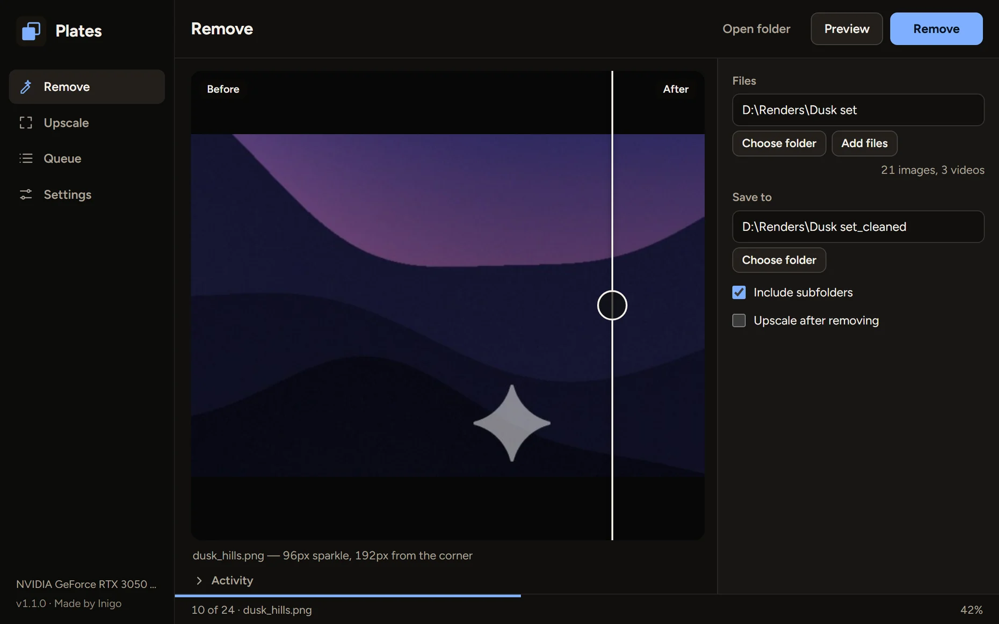
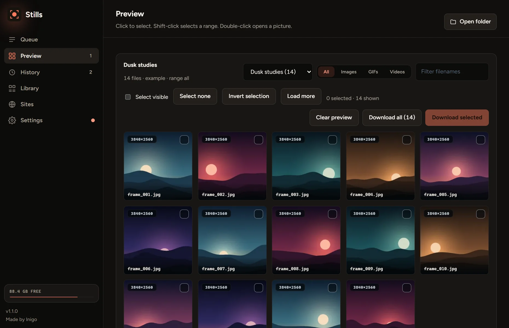
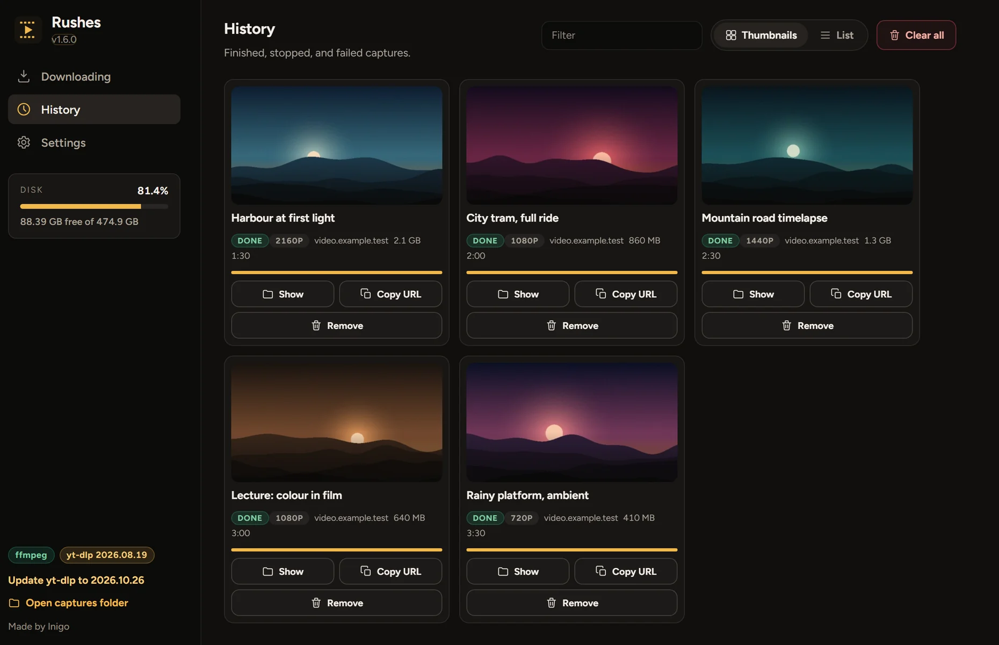

Plates
Clean corner watermarks off your AI pictures and video.
- It finds the mark for you
- Dark scenes stay clean
- Your originals are safe

Plates, Stills and Rushes are free Windows apps for the pictures and video on your own drive. Each is one file, with no ads and nothing to sign up for.
Clean corner watermarks off your AI pictures and video.


Save a whole gallery, or just the pictures you pick.

Save public videos and audio to your own drive.


Heart Apps are free Android apps: Prompt Heart, for the AI prompts that work, and Watch Heart, a diary for films, series and anime.
Yes. All three are free, with no ads, no subscriptions and no paid extras.
The apps aren’t code-signed, so SmartScreen can show “Windows protected your PC”. Choose More info, then Run anyway, and only for files from these pages. Each release lists a checksum so you can verify the download.
Plates, stills and rushes all began life wound on a spool of film. A spoolhouse is where a shoot’s spools are kept, and these apps look after yours.
No, these are Windows apps.
Write to inigo@tosstheworld.org. I read every message.